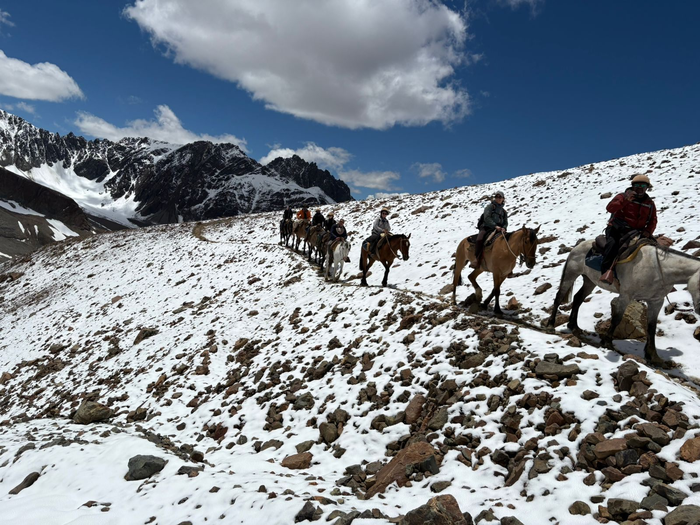
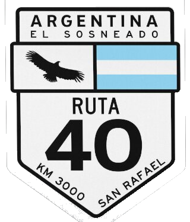

Somos un equipo de guías y baqueanos que recorre la cordillera de Mendoza desde 1997, con base en el Parador El Chacallal, sobre la Ruta 40, entre San Rafael y Malargüe.
Empezamos guiando cabalgatas y trekking de montaña, y hoy somos uno de los operadores habilitados para llevarte hasta el Avión de los Uruguayos, en el Valle de las Lágrimas. Conocemos el terreno porque lo recorremos nosotros mismos: sabemos cruzar los ríos, leer el clima de la montaña y armar un campamento seguro a más de 2.000 metros de altura.
En cada salida trabajamos con pensión completa, equipos de radio y campamento de montaña propio — para nosotros la aventura no significa improvisar.


Punto de encuentro: desde acá salen todas las excursiones de Senderos.
Preparación de cargas: en el Parador se arma y se acomoda el equipo antes de cada salida.
Cabañas: podés llegar el día anterior y pasar la noche previa ahí mismo, antes de arrancar la excursión.
Comida: el Parador ofrece servicio de comida para el grupo, antes y después de cada excursión.
Ver Parador El Chacallal en Google MapsEscribinos por WhatsApp para consultar disponibilidad, valores y planes de pago.